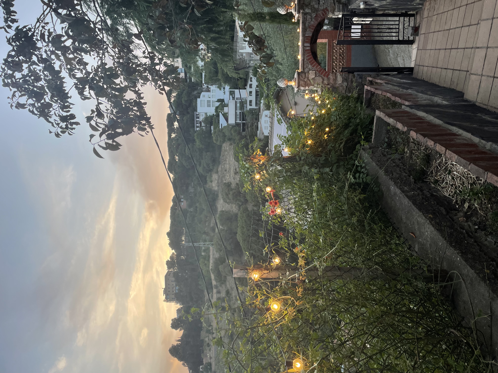
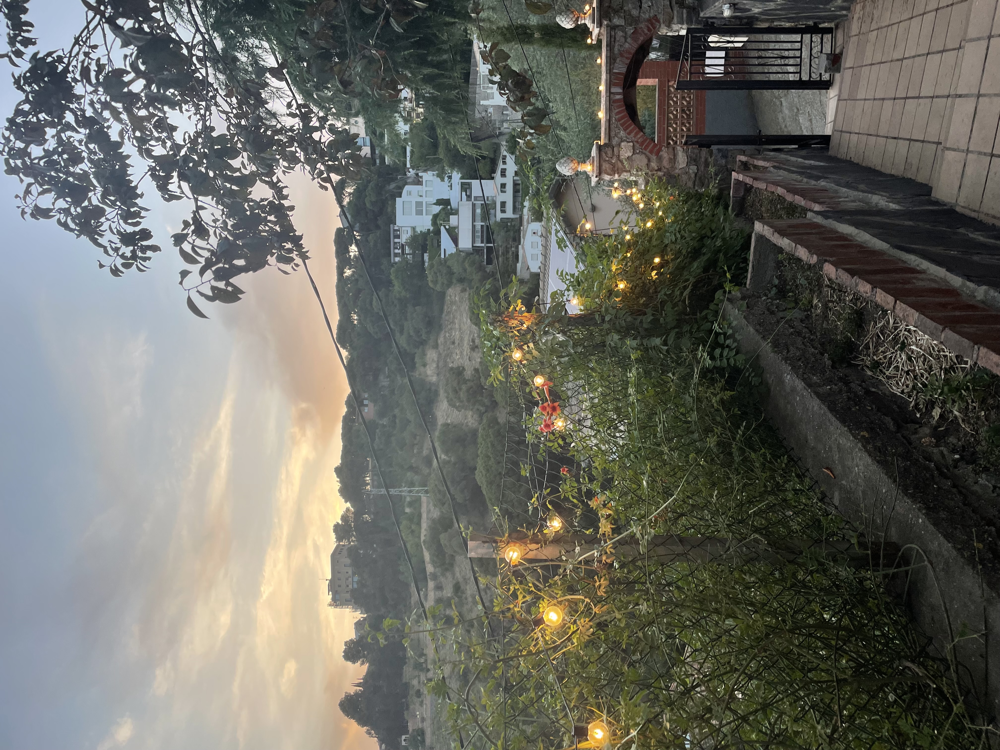

My sophomore summer in college, I had the opportunity to study abroad in Barcelona for 7 weeks from May - July! I lived in El Clot which is in the Eixample. The nearest attraction was La Sagrada Familia which is one of Barcelona's most famous attractions. While I was in Spain, I took two classes: one about the history of the people and culture of Barcelona and one about architecture in Barcelona. My trip was one of my most cherished experiences and you can read more about the must-see locations, cultural experiences, and highlights of my trip!

Barcelona is a city adorned with architectural marvels and vibrant spaces, each leaving an indelible mark on visitors. La Sagrada Familia stands as the quintessential emblem of the city, Antoni Gaudí's magnum opus perpetually under construction since 1882. Its intricate facades depict biblical scenes, while its interior boasts a forest-like ambiance with towering columns and stained glass, reflecting Gaudí's profound connection to nature and spirituality.
Park Güell, another Gaudí masterpiece, enchants with its mosaic-covered benches, fantastical structures, and serpentine pathways. This whimsical park invites visitors to wander amidst vibrant hues and surreal designs, offering panoramic views of the city from its hilltop vantage.
The bunkers of Carmel, lesser-known but equally captivating, provide a panoramic view of Barcelona's skyline. Once an anti-aircraft fortification during the Spanish Civil War, these ruins now serve as a popular spot for locals and tourists alike, offering a breathtaking panorama of the city's sprawl against the Mediterranean backdrop.
Las Ramblas, a bustling boulevard brimming with energy, acts as Barcelona's vibrant artery. Lined with street performers, flower stalls, and lively cafes, it's a microcosm of the city's spirit. Meanwhile, the Cathedral of Barcelona, or La Seu, stands as a majestic Gothic masterpiece, its spires reaching skyward and its interior adorned with intricate chapels and a serene cloister.
La Boqueria, a world-renowned market situated off Las Ramblas, is a sensory feast. Its vibrant stalls overflow with colorful fruits, fresh seafood, aromatic spices, and local delicacies, drawing visitors to immerse themselves in its bustling atmosphere and culinary delights.
Lastly, La Ciutadella Park, an urban oasis, invites relaxation amid lush greenery, serene lakes, and monumental fountains. Home to the Parliament of Catalonia, this park offers a tranquil escape from the city's hustle, hosting locals and visitors picnicking, strolling, and enjoying boat rides on the lake.
Each of these iconic landmarks contributes to Barcelona's allure, blending history, art, culture, and nature into an unforgettable tapestry that beckons exploration and appreciation.
My journey through Barcelona's cultural tapestry has been nothing short of mesmerizing. One of the highlights was joining a traditional cooking class, where I delved into crafting iconic Spanish dishes. From mastering the art of making paella, infusing saffron-kissed rice with an array of fresh seafood or meats, to preparing patatas bravas, those crispy potatoes bathed in spicy bravas sauce, each dish was a flavorful immersion into Spanish cuisine.
The simplicity yet richness of pan con tomate, a dish of bread with tomatoes and olive oil, and the refreshing burst of flavors in gazpacho, a chilled soup, felt like a culinary embrace of the Mediterranean. The elegant Spanish tortilla, with its potato and onion melody, and the intricate craft of making croquettes, those crispy delights filled with creamy béchamel, jamón, or cheese, revealed the artistry in Spanish cooking.
Beyond the kitchen, Barcelona offered cultural spectacles that left me awestruck. Experiencing Correfoc was like dancing with fire. Watching performers donning devilish attire parading amidst fireworks, pulsating drumbeats, and dancing flames was an electrifying immersion into the city's festivals.
The Castells, the human towers, stood as a testament to strength and unity. Witnessing these towering human structures being built, tier upon tier, displayed the incredible teamwork and community spirit within Catalan tradition.
Then came the Feast of Sant Joan, a celebration of the summer solstice that ignited the city with bonfires, fireworks, and contagious joy. Gathering on beaches and in squares, surrounded by music and dancing, while fireworks illuminated the night sky, was an unforgettable experience steeped in tradition and summer revelry.
These encounters allowed me to unravel the layers of Barcelona's rich cultural fabric, where culinary heritage, festive exuberance, and communal rituals converge to create an immersive and unforgettable journey.
Studying abroad in Barcelona was an immensely fulfilling and uniquely special experience that enriched me in countless ways. The adventure began with meeting an incredible array of people, both fellow students on the program and locals I encountered during my explorations. The diversity of personalities and perspectives broadened my worldview and created lasting connections that spanned continents.
My academic journey was a blend of classroom learning and experiential education. Learning about Barcelona's culture in formal settings was fascinating, but it was the immersion into local events, festivals, and traditions that truly brought the lessons to life. Experiencing Correfoc, the Feast of Sant Joan, and other cultural celebrations became vibrant chapters in my education, providing insights into the city's heartbeat.
One of the most empowering aspects of my trip was the opportunity to travel solo. Navigating the city independently allowed me to embrace newfound independence, fostering a sense of self-reliance and confidence. Each solo adventure was a chance to uncover hidden gems, forge connections with locals, and create my own narrative within this captivating city.
Moreover, delving into Barcelona's architecture was an absolute highlight. From the awe-inspiring Sagrada Familia to the whimsical Park Güell and the Gothic charm of the city's historic buildings, every structure was a testament to creativity and history. Understanding the stories behind the architectural marvels became a personal fascination, enriching my experience and deepening my appreciation for the city's artistic soul.
This study abroad journey was a mosaic of experiences that shaped me profoundly. It cultivated friendships, expanded my cultural horizons, fostered independence, and ignited a passion for architecture that will linger as cherished memories long after my return home. Barcelona became not just a destination but a place where I discovered pieces of myself amid its vibrant streets and storied landmarks.
 
